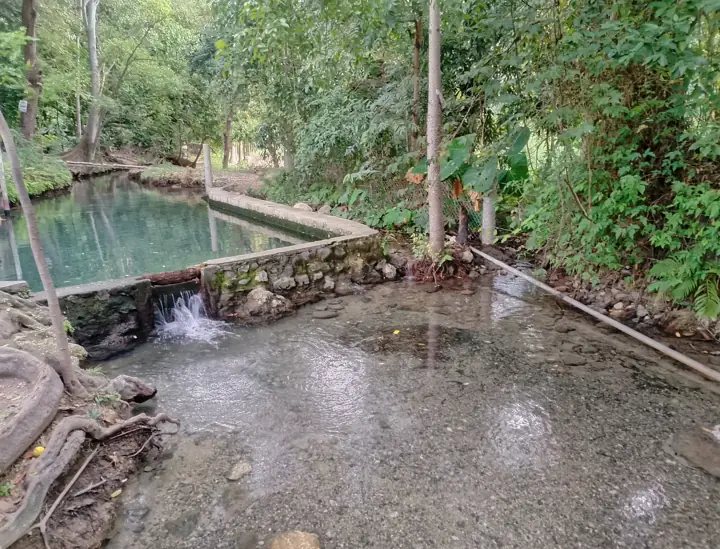
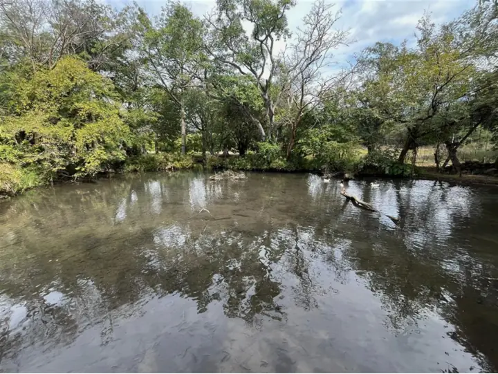
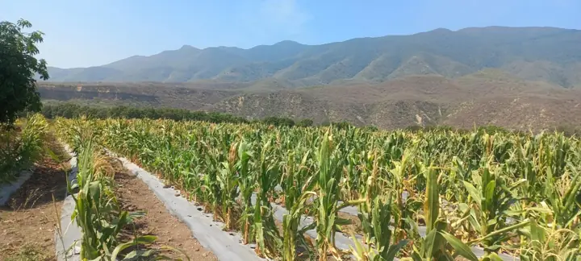
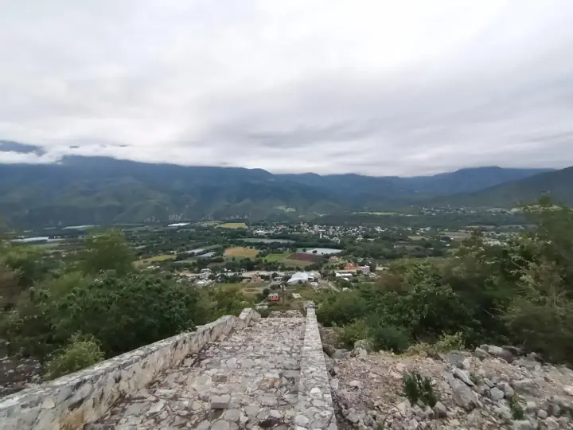

Lo que está en juego
No es un mapa: son estos lugares
Cada propuesta cuida un sitio que la gente del valle conoce por su nombre. Tócalos para ver qué se propone para cada uno.
 El árbol milenarioCreció junto al manantial. Desde 1970 las casas lo fueron rodeando.Manantiales y acequias →
El árbol milenarioCreció junto al manantial. Desde 1970 las casas lo fueron rodeando.Manantiales y acequias →

El manantial El AbanicoYa dejó de ser «zona urbana»: hoy es protección ecológica.Manantiales y acequias →
Los PuentesLa acequia que cruza el pueblo y que será parque lineal.Corredores biológico-productivos → El río y su riberaDonde se nada, se pesca y también se saca arena.Corredor del río Concá →
El río y su riberaDonde se nada, se pesca y también se saca arena.Corredor del río Concá →

Las parcelas de riego455 hectáreas que viven del agua de los manantiales.Área de Conservación Agrícola →
El cerro de la CruzLa selva baja, sus veredas y el antiguo Camino Real.Camino Real y puertas del cerro →La propuesta general
Un corazón agrícola y un cinturón que lo cuida
Del proceso participativo salieron tres líneas prioritarias. Fortalecer la agricultura, ordenar el crecimiento urbano y proteger el agua son los objetivos que comparten todos los proyectos que derivan de ellas.
Un área que protege las 455 hectáreas más productivas del valle, delimitada por los propios habitantes. Es la propuesta síntesis que articula a todas las demás.
Franjas de amortiguamiento que cuidan los bordes del paisaje: el río y los manantiales, el Camino Real y el cerro, los corredores que envuelven a los pueblos.
Acuerdos sobre dónde y cómo crecer: aprovechar primero los lotes con servicios, ordenar la carretera y los nuevos barrios sin sacrificar tierra fértil.
Un mismo valle, siete capas: elige una propuesta para ver dónde cae en el mapa. Planos del equipo del proyecto, UAQ.
Planeación propositiva
7 propuestas para cuidar el territorio
La primera define el área de conservación del paisaje agrícola de riego; las otras seis la complementan, respondiendo de dos en dos a los ecotonos del agua, del campo y de los pueblos.
En video
Las propuestas contadas por el equipo
Siete cápsulas cortas del proyecto. Al reproducir se carga contenido de YouTube.
La primera pieza ya camina
El parque lineal de la Acequia Madre
Un kilómetro de ribera que cruza Concá de norte a sur, junto al cauce que alimentan los manantiales. Es el ejemplo vivo de lo que este proyecto llama ecotono: un borde que es, a la vez, espacio de encuentro y de cuidado de la naturaleza.
El diseño nació de entrevistas y reuniones con vecinos, propietarios colindantes y ejidatarios: senderos peatonales y permeables a los dos lados, barreras de vegetación nativa en el talud, los dos cruces que ya existen acondicionados sin obra civil, cuatro accesos para todas las personas y un programa de educación ambiental con las escuelas.
- ✓El manantial El Abanico ya no es «zona urbana»Pasó a protección ecológica en la zonificación municipal.
- ✓Dictamen de impacto ambientalObtenido ante SEMARNAT en 2024.
- ✓Dentro del nuevo PMDULa Acequia Madre de Concá es un área de actuación del programa aprobado en enero de 2026.
- …Concesión de la zona federalEn trámite ante CONAGUA. Primero la concesión, después los recursos.